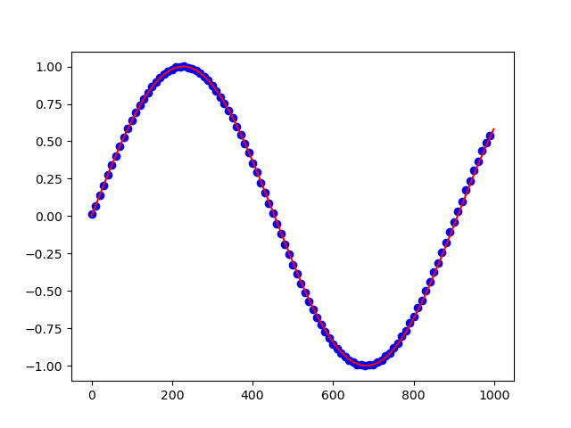

Downsampling#
- basic.downsampling.run(data, src_freq, tgt_freq)#
Downsamples a signal (data) from src_freq to tgt_freq.
- Parameters
data – The data to be downsampled.
src_freq – The original frequency of the signal.
tgt_freq – The new frequency of the signal.
- Returns
Downsampled data
The following code example shows how to apply downsampling.
def main():
#Configure sample data
channel_count = 1
frequency = [random.randint(10, 25) for _ in range(channel_count)]
data_range = np.arange(0, 1000)
frequency_sampling = 10000
frequency_downsampled = 1000
#Generate some sample data
raw_data = [None for _ in range(channel_count)]
for idx in range(channel_count):
genuine_signal = np.sin(2 * np.pi * frequency[idx] * data_range / frequency_sampling)
raw_data[idx] = genuine_signal
raw_data = np.asarray(raw_data)
ds_data = ds.run(raw_data[0], frequency_sampling, frequency_downsampled)
#visualize result
plt.figure()
plt.plot(np.arange(0, len(data_range), 1), raw_data[0], color = "red")
plt.scatter(np.arange(0, len(data_range), frequency_sampling/frequency_downsampled), ds_data, color = "blue")
plt.show(block = True)
main()
Applying downsampling reduced the high-density red line to the data points identified by the blue dots:
